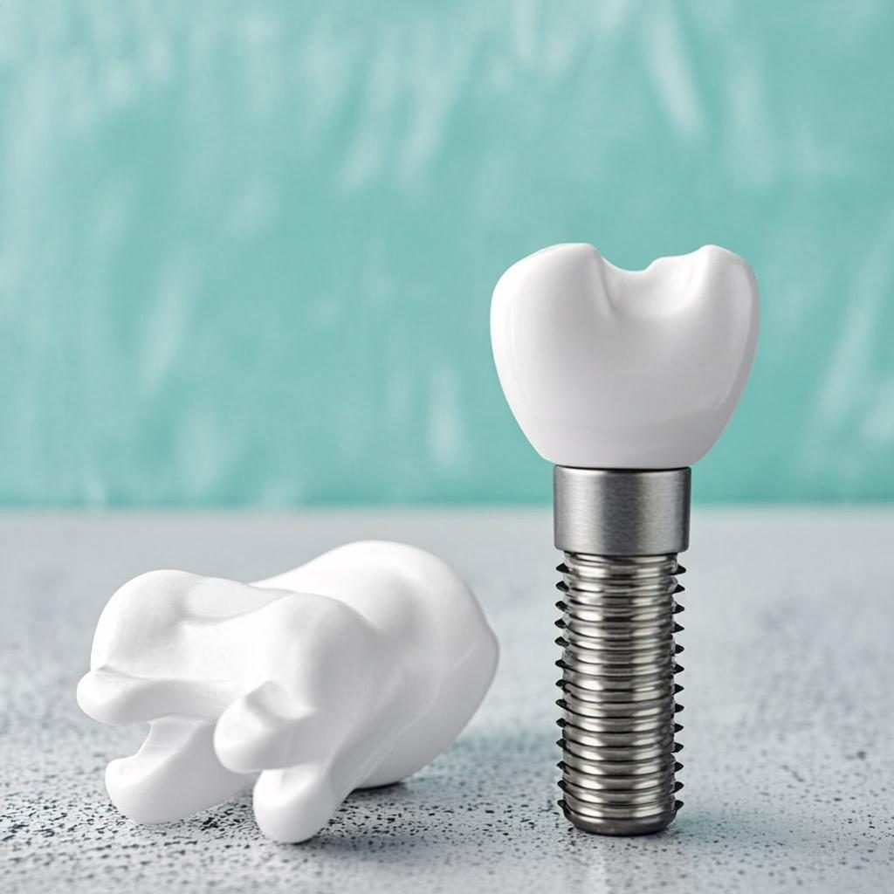
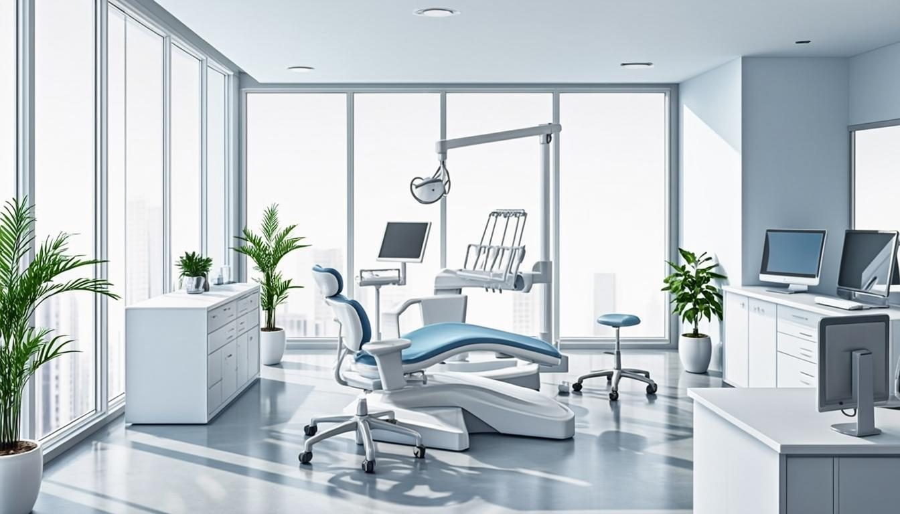
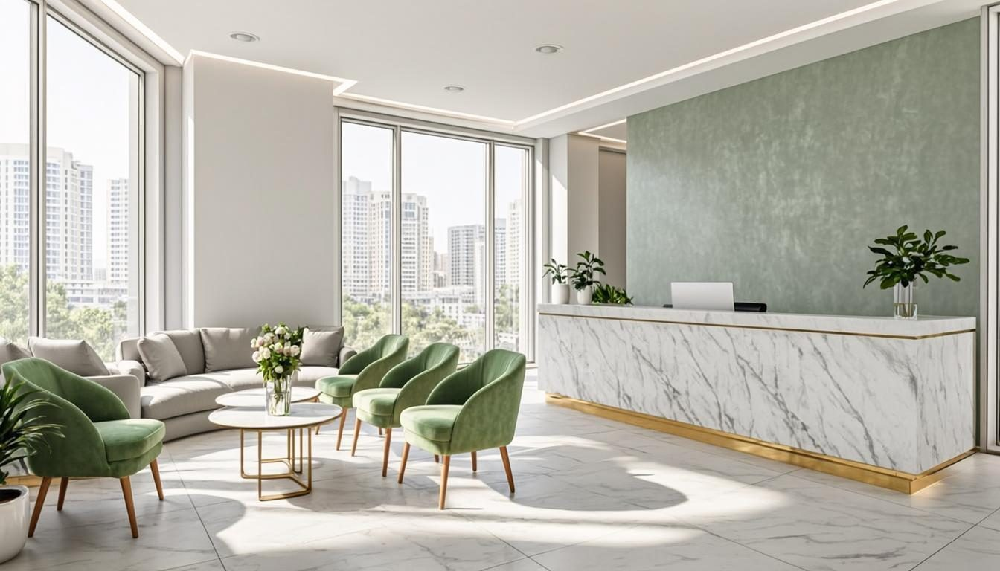

em Ribeirão Preto
Implante Dentário
Reponha dentes perdidos com segurança, naturalidade e a firmeza de um sorriso de volta a sorrir.
Agendar avaliaçãoTecnologia, precisão e arte para transformar o seu sorriso. Do implante dentário ao clareamento, o sorriso dos seus sonhos em um só lugar — no coração de Ribeirão Preto.

Do implante dentário ao clareamento: soluções completas de implantodontia e estética dental em um só endereço.
Reposição de dentes perdidos com implantes de titânio, devolvendo mastigação, estética e autoestima com naturalidade.
Agendar pelo WhatsAppPlanos completos para restaurar função, conforto e beleza do sorriso — de casos simples a reabilitações totais.
Agendar pelo WhatsAppPróteses fixas ou removíveis ancoradas em implantes: mais estabilidade, mais conforto e mais qualidade de vida.
Agendar pelo WhatsAppCoroas individuais com acabamento natural sobre o implante, devolvendo forma, cor e função ao dente reposicionado.
Agendar pelo WhatsAppReconstrução do volume ósseo do maxilar para viabilizar implantes com previsibilidade e segurança.
Agendar pelo WhatsAppLaminados ultrafinos de porcelana para harmonizar cor e forma do sorriso com delicadeza e minimalismo.
Agendar pelo WhatsAppCorreção de forma, cor e pequenos desalinhamentos com lâminas de porcelana de alto padrão estético.
Agendar pelo WhatsAppSorriso mais branco e radiante com técnica profissional, segurança e acompanhamento clínico.
Agendar pelo WhatsAppCuidado que começa muito antes do tratamento — e continua muito depois dele.
Nenhum sorriso é igual ao outro. Cada tratamento nasce de uma avaliação detalhada e de um plano feito sob medida para você.
Da implantodontia à estética dental, procedimentos conduzidos com técnica refinada e atenção aos mínimos detalhes.
Escuta, acolhimento e respeito ao seu tempo. Aqui, você entende cada etapa do tratamento e decide com segurança.
No Centro de Ribeirão Preto, no Edifício Center Plaza — perto de você, com praticidade para as suas consultas.

O Consultório Odontológico do Dr. Marcelo Dercatshoff nasceu de uma missão simples: devolver às pessoas a confiança de sorrir. Localizado no Centro de Ribeirão Preto, o consultório tem como foco a implantodontia e a estética dental — do implante dentário e da reabilitação oral às lentes de contato dental, facetas de porcelana e clareamento.
Cada tratamento começa com uma escuta atenta e um planejamento individualizado. O objetivo é sempre o mesmo: um resultado natural, funcional e que faça você sorrir sem pensar duas vezes.
Quatro passos simples entre você e o sorriso que você merece.
Mande um "oi" no WhatsApp. Nossa equipe responde rapidinho e agenda a sua avaliação.
Consulta de escuta e exame: entendemos o seu caso, seus objetivos e as possibilidades reais.
Você recebe um plano de tratamento individualizado, com etapas e orientações claras.
Execução com precisão e acompanhamento contínuo. Hora de sorrir com confiança!
Respostas diretas para as dúvidas mais comuns de quem busca um novo sorriso.
O valor varia conforme o número de dentes a repor, a necessidade de enxerto ósseo e o tipo de prótese ou coroa. Por isso, a avaliação é individualizada: após analisar o seu caso, o Dr. Marcelo apresenta o plano completo com etapas e custos. Agende sua avaliação pelo WhatsApp.
O procedimento é realizado com anestesia local e você não sente dor durante a cirurgia. No pós-operatório, é comum um desconforto leve e temporário, bem controlado com a medicação orientada. A maioria dos pacientes relata que a experiência foi mais tranquila do que imaginava.
Com osseointegração bem-sucedida, boa higiene bucal e revisões periódicas, o implante pode durar muitas décadas. A longevidade depende dos seus cuidados diários e da manutenção regular no consultório.
As lentes de contato dental são laminados ultrafinos de porcelana que, em muitos casos, exigem pouco ou nenhum desgaste do dente. As facetas de porcelana são lâminas um pouco mais espessas, indicadas quando é preciso corrigir forma, cor ou pequenos desalinhamentos com maior cobertura. A escolha certa depende da avaliação do seu sorriso.
Não. Com supervisão profissional, produtos em concentrações seguras e protocolo adequado, o clareamento não danifica o esmalte. Pode ocorrer sensibilidade temporária, que regride naturalmente após o tratamento.
Pessoas que perderam um ou mais dentes, usam próteses instáveis, apresentam desgaste intenso dos dentes ou têm dificuldade para mastigar e falar. A reabilitação oral devolve função, conforto, saúde e estética ao sorriso por completo.
É a técnica que repõe o volume de osso no maxilar ou na mandíbula. É indicada quando há perda óssea — geralmente após extrações ou perda de dentes — para que o implante tenha uma base firme. É um procedimento consagrado, que amplia as chances de sucesso da implantodontia.
Clique em qualquer botão de WhatsApp do site ou envie uma mensagem para o +55 16 99232-8650. O consultório fica na Rua Visconde de Inhaúma, 580 — Sala 410, Edifício Center Plaza, Centro, Ribeirão Preto — SP. Atendimento mediante agendamento.
Agende agora sua avaliação pelo WhatsApp. É rápido, sem compromisso e o primeiro passo rumo ao sorriso que você sempre quis.
Quero agendar minha avaliação Atendimento personalizado • Centro de Ribeirão PretoNo coração de Ribeirão Preto, com fácil acesso e estrutura confortável.
Rua Visconde de Inhaúma, 580
Sala 410 — Edifício Center Plaza
Centro, Ribeirão Preto — SP
Mediante agendamento
Marque sua consulta pelo WhatsApp